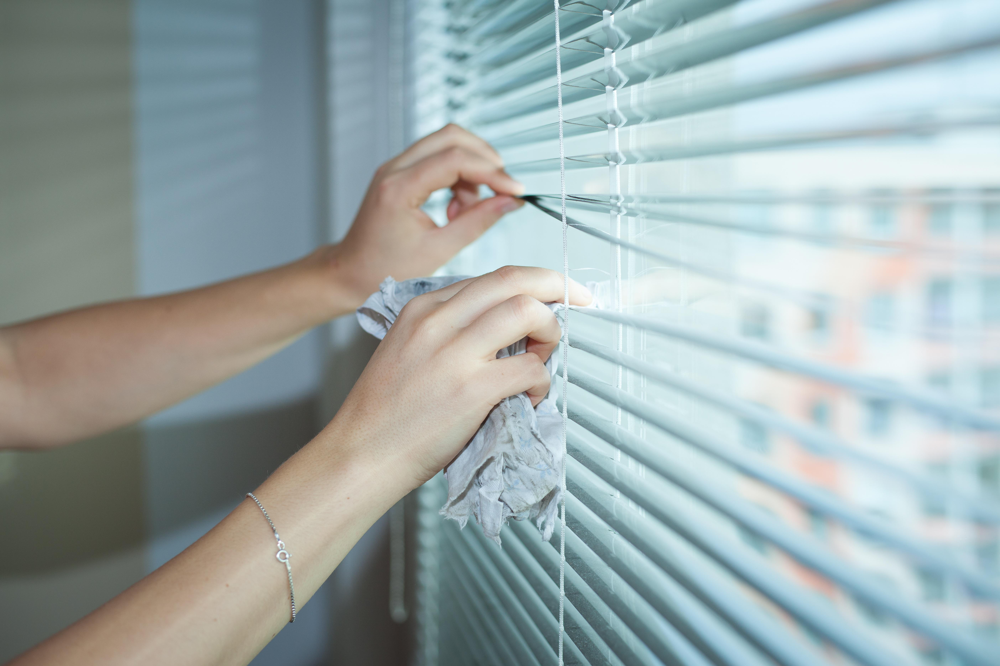

Fensterreinigung in Viersen für klare Glasflächen
Saubere Fenster, Rahmen und Fensterbänke sorgen sofort für einen gepflegteren Eindruck. Der genaue Umfang wird passend zu Objekt, Zugänglichkeit und gewünschtem Rhythmus abgestimmt.
Was zur Fensterreinigung gehören kann
Fensterreinigung ist je nach Gebäude sehr unterschiedlich. Deshalb wird vorab geklärt, welche Glasflächen erreichbar sind und welche Zusatzflächen berücksichtigt werden sollen.
- ✓Glasflächen innen und außen
Reinigung gut erreichbarer Fensterflächen nach Absprache. - ✓Rahmen und Fensterfalze
Soweit zugänglich und im vereinbarten Umfang enthalten. - ✓Fensterbänke
Innenliegende oder erreichbare Fensterbänke können mitgereinigt werden. - ✓Glaselemente und Türen
Zum Beispiel Glastüren, Eingangsbereiche oder einzelne Glasflächen im Objekt.

Für unterschiedliche Objekte sinnvoll
Fensterreinigung kann einzeln beauftragt oder mit Wohnungs-, Büro- oder Treppenhausreinigung kombiniert werden.
Private Haushalte
Für Wohnungen und Häuser, wenn Fenster regelmäßig oder nach Bedarf gereinigt werden sollen.
Büros und Praxen
Für gepflegte Arbeitsbereiche, Empfangszonen und Kundenflächen.
Mehrfamilienhäuser
Für Glasflächen in Eingängen, Treppenhäusern und Gemeinschaftsbereichen.
Glastüren und Elemente
Sichtbare Glasflächen im Innen- oder Eingangsbereich nach Absprache.
Regelmäßige Intervalle
Sinnvoll, wenn Glasflächen dauerhaft gepflegt wirken sollen.
Einmalige Reinigung
Zum Beispiel nach stärkerer Verschmutzung, Saisonwechsel oder vor besonderen Terminen.
Wichtig vor dem Angebot
Für eine realistische Einschätzung helfen Anzahl der Fenster, Etage, Zugänglichkeit, gewünschte Seiten und ob Rahmen oder Fensterbänke mitgereinigt werden sollen.
Objekt beschreibenLokale Fensterreinigung in Viersen
Der Schwerpunkt liegt auf Viersen und direkter Umgebung. Kurze Wege erleichtern Abstimmung, Terminfindung und die Kombination mit weiteren Reinigungsleistungen.
- ✓Privat und gewerblich
Passend für Haushalte, Büros, Praxen und Immobilien. - ✓Klare Leistungsabgrenzung
Umfang, Zugänglichkeit und Zusatzflächen werden vorher besprochen. - ✓Kombinierbar
Fensterreinigung kann mit Wohnungs-, Büro- oder Treppenhausreinigung verbunden werden.
Häufige Fragen zur Fensterreinigung
Werden Rahmen und Fensterbänke mitgereinigt?
Ja, wenn es vorher so vereinbart wird und die Flächen gut zugänglich sind. Der Umfang sollte bei der Anfrage kurz genannt werden.
Ist Fensterreinigung auch für Büros möglich?
Ja. Für Büros, Praxen und kleinere Gewerbeflächen kann Fensterreinigung mit der regelmäßigen Reinigung kombiniert werden.
Was ist bei hohen oder schwer erreichbaren Fenstern?
Die Zugänglichkeit wird vorab geprüft. So lässt sich seriös einschätzen, ob und in welchem Umfang die Reinigung möglich ist.
Fensterreinigung in Viersen anfragen
Senden Sie kurz Anzahl der Fenster, Objektort und gewünschten Umfang. Wir melden uns zur Abstimmung.
Anfrage senden